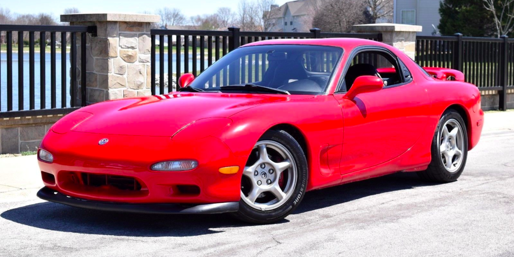
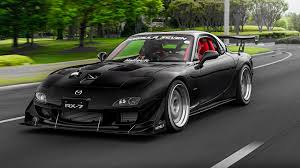

mazda rx7
La tercera generación, conocida bajo el código FD, se lanzó en 1993 y cesó su producción en 2002. Este auto destaca por usar un motor rotativo Wankel twin turbo de tan solo 1.3
litros que en las primeras versiones erogaba 255 hp, para en su última evolución llegar hasta los 280 caballos de fuerza. Con u peso de 1,260 Hp es considerado uno de los deportivos mejor balanceados de su época.
De hecho, es uno de los protagonistas de manga/anime Initial D y de The Fast and the Furious: Tokyo.
carro stock

carro modificado

volver